lesh.digital — мы проектировщики и дизайнеры интерфейсов сложных сервисов, SaaS, CRM, ERP, ESB, MDM, WMS, дашбордов, личных кабинетов и административных панелей
lesh.digital — мы проектировщики и дизайнеры интерфейсов сложных сервисов, SaaS, CRM, ERP, ESB, MDM, WMS, дашбордов, личных кабинетов и административных панелей
Используем пользовательские персоны и сценарии, экспертный опыт, конкурентный анализ, здравый смысл и эмпатию
Используем бумагу, карандаш, Figma, Sketch, Invisionapp, Zeplin, Axure RP, мозг и накопленный опыт
Используем Adobe Photoshop, Adobe Illustrator, законы композиции и чувство прекрасного
